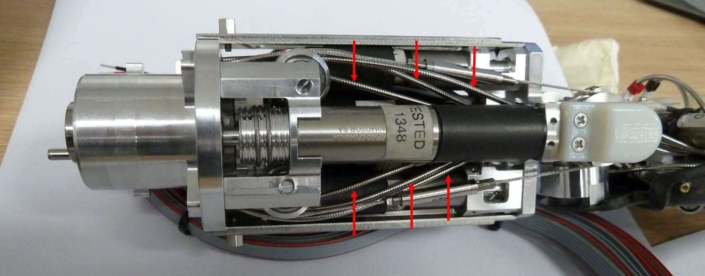
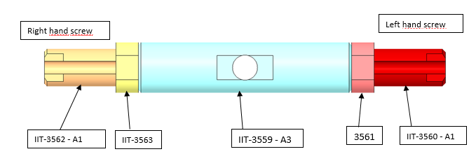
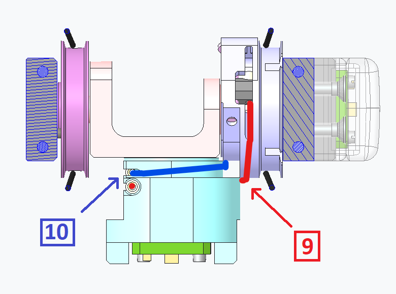

LOWER ARM V2 CABLING¶
CAD DESIGN¶
Let's have an overview of the mechanical CAD from different view angles and their specific names on CAD assembly.
| Left Forearm V2 | Right Forearm V2 |
|---|---|
 |
 |
| in CAD repository (maybe CREO): RC_TLR_007_A_001_LEFT_FOREARM.ASM + RC_TLR_012_A_001_LEFT_HAND.ASM | in CAD repository (maybe CREO): RC_TLR_010_A_001_RIGHT_FOREARM.ASM + RC_TLR_011_A_001_RIGHT_HAND.ASM |
1 WHAT DO I NEED TO CABLE¶
Here you will find the overall tables describing the necessary parts needed when routing the cables onto the 11 motors (12 motors inside the Lower Arm but just 11 are cabled) and the mandatory sheaths to be used in the correct place.
1.1 Finger sheaths¶
| IITCODE | Alias | Description |
|---|---|---|
| 2375 | SHEATH | Open spiral spring, inox steel AISI302, D ext= 1.6mm, D wire= 0.25mm, L = 500 mm |
| 13963 | MAZZONI_0_3-0_8-250_SS_SHEATH | Rectangular section sheath 0.3x0.8, L = 250 mm |
| 2386 | TEFLON_SHEATH | Insulating sheath, AWG22, inner dia 0,709 -0/+0,102 mm, material thickness 0,152 -0/+0,102mm, Teflon, transparent |
Danger
inside sheath 13963 please DO NOT (NEVER) USE Teflon sheath!!!
1.1.1 Sheaths length & labelling¶
Please refer to this table to find out which sheath you need to install at the right place and the correct label to add on top of it:
| Finger | Typology | Label | Length (mm) | IITCODE - sheath |
|---|---|---|---|---|
| Thumb | Proximal | 6+ | 185 | 13963 |
| Thumb | Proximal | 6- | 185 | 13963 |
| Thumb | Short Prox + | pict. above | 9 | 2375 |
| Thumb | Short Prox - | pict. above | 11 | 2375 |
| Thumb | Distal | N4 | 57 | 2375 (+Teflon) |
| Thumb | Short Dist | pict. above | 11.5 | 2375 |
| Thumb | oppose | S0 | 50 | 2375 (+Teflon) |
| Thumb | oppose | S2 | 57 | 2375 (+Teflon) |
| Index | Proximal | 8+ | 224 | 13963 |
| Index | Proximal | 8- | 224 | 13963 |
| Index | Distal | N5 | 105 | 2375 (+Teflon) |
| Middle | Proximal | 7+ | 224 | 13963 |
| Middle | Proximal | 7- | 224 | 13963 |
| Middle | Distal | N3 | 105 | 2375 (+Teflon) |
| Ring | Distal | N2 | 95 | 2375 (+Teflon) |
| Pinkie | Distal | N9 | 95 | 2375 (+Teflon) |
| Fingers | abduct | T0 | 90 (1) | 2375 |
| Fingers | abduct | T2 | 27 | 2375 |
| Fingers | abduct | T4 | 44 | 2375 |
(+Teflon) refers to the IITCODE 2386
Note
(1) the length 90 mm of T0 comes from the previous version where there was: T0+T3+tensioner (38+38+14 mm).
Warning
For the proximal sheath, please label BOTH the start of the sheath (base of the motor at the level of the elbow) and at the end of it.
1.2 Finger & hand cables¶
| IITCODE | Alias | Description |
|---|---|---|
| 1815 | CG077063 | Stainless steel micro-cable, cable construction 7x7mm, nom. diameter 0,63mm, not coated, AISI 316 |
| 2391 | U7194561 | Stainless steel micro-cable, cable construction 7x19mm, nom. diameter 0.45mm, outer diameter 0.61mm, Polyamide coated, AISI 316 - CARL STAHL GMBH |
1.2.1 Cables length¶
Please refer to this table to find out which cable you need to install at the right place:
| Finger | Typology | Length (cm) | IITCODE - cable |
|---|---|---|---|
| Thumb | oppose | 50 | 1815 |
| Thumb | Proximal | 100 | 1815 |
| Index | Proximal | 100 | 1815 |
| Middle | Proximal | 100 | 1815 |
| Thumb | Distal | 40 | 2391 |
| Index | Distal | 40 | 2391 |
| Middle | Distal | 40 | 2391 |
| Ring | Distal | 40 | 2391 |
| Pinkie | Distal | 40 | 2391 |
| Fingers | Abduction | 50/60 | 1815 |
2 HOW TO CABLE - FINGERS & HAND¶
2.1 Proximal joints¶
The 3 proximal joints :
- Thumb
- Index
- Middle
located here:
| LEFT FOREARM | RIGHT FOREARM |
|---|---|
 |
|
 |
 |
are all wired with the cable 0.63mm uncoated from CARLSTAHL GmbH as per the following table:
| IITCODE | Alias | Description |
|---|---|---|
| 1815 | CG077063 | Stainless steel micro-cable, cable construction 7x7mm, nom. diameter 0,63mm, not coated, AISI 316 |
Every sheath in which the cable pass through (+ and - ) is made of:
| IITCODE | Alias | Description |
|---|---|---|
| 13963 | MAZZONI_0_3-0_8-250_SS_SHEATH | Rectangular section sheath 0.3x0.8, L = 250 mm |
Danger
inside sheath 13963 please DO NOT USE Teflon sheath!!!
Note
IITCODE 13963 is alternative to the 4545 (old one - not in use ANYMORE) and it was introduced only for cost efficiency.
Please follow this link for an extended HOWTO route the cable.
2.1.1 THUMB peculiarity¶
The THUMB is a finger a bit particular in the wiring compared to the index and the middle because - as it is the finger with the most degrees of freedom- it needs to pass a series of pulleys at the base of it in order to add also the thumb oppose joint movement inside the articulation.

The IITCODE 2375 as specification described below :
| IITCODE | Alias | Description |
|---|---|---|
| 2375 | SHEATH | Open spiral spring, inox steel AISI302, D ext= 1.6mm, D wire= 0.25mm, L = 500 mm |
Is needed for the 3 pieces circled in red on the picture above. Here are the specs for each one of them:
| Number | Type | Length (mm) |
|---|---|---|
| 1 | distal short | 11.5 |
| 2 | prox short (-) | 11 |
| 3 | prox short (+) | 9 |
Please follow this link for an extended HOWTO route the cable.
Once the 3 proximal joints are cabled, the lateral view of the forearm should look like the picture below. The 6 sheaths are pointed by the red arrows.

2.2 Distal joints¶
The 5 proximal joints (theoretically 5 but in practice just 4 motors need to be wired):
- Thumb
- Index
- Middle
- Ring and Pinkie
Located here:
| RIGHT FOREARM | LEFT FOREARM |
|---|---|
Are all wired with the cable 0.61mm coated from CARLSTAHL GmbH as per the following table:
| IITCODE | Alias | Description |
|---|---|---|
| 2391 | U7194561 | Stainless steel micro-cable, cable construction 7x19mm, nom. dia 0.45mm, outer dia 0.61mm, Polyamide coated, AISI 316 - CARL STAHL GMBH |
Every sheath is made of both the following pieces:
| IITCODE | Alias | Description |
|---|---|---|
| 2375 | SHEATH | Open spiral spring, inox steel AISI302, D ext= 1.6mm, D wire= 0.25mm, L = 500 mm |
| 2386 | TEFLON_SHEATH | Insulating sheath, AWG22, inner dia 0,709 -0/+0,102 mm, material thickness 0,152 -0/+0,102mm, Teflon, transparent |
Please follow this link for an extended HOWTO route the cable.
2.3 Thumb Oppose¶
To build the thumb oppose you just need 2 pieces of the sheath IITCODE 2375
| Label | Dimension (mm) | IITCODE - SHEATH |
|---|---|---|
| S0 | 50 | 2375 (+Teflon) |
| S2 | 57 | 2375 (+Teflon) |
And approximatively 50cm of IITCODE 1815 to route it.
| IITCODE | Alias | Description |
|---|---|---|
| 1815 | CG077063 | Stainless steel microcable, cable construction 7x7mm, nom. dia 0,63mm, not coated, AISI 316 |
| 2375 | SHEATH | Open spiral spring, inox steel AISI302, D ext= 1.6mm, D wire= 0.25mm, L = 500 mm |
Here is a more detail specification of where to find the 2 pieces:
| Left Hand | Right Hand |
|---|---|
Please follow this link for an extended HOWTO route the cable.
Remember that the shorter sheat is S0 and the longer one is S2.
2.4 Fingers Abduction¶
To build the fingers abduction you just need 3 pieces of the sheath IITCODE 2375
| Label | Dimension(mm) | IITCODE - SHEATH |
|---|---|---|
| T0 | 90 | 2375 |
| T2 | 27 | 2375 |
| T4 | 44 | 2375 |
Danger
inside sheath 2375 please DO NOT USE Teflon sheath!!!
and approximatively 50cm of IITCODE 1815 to route it.
| IITCODE | Alias | Description |
|---|---|---|
| 1815 | CG077063 | Stainless steel micro-cable, cable construction 7x7mm, nom. diameter 0,63mm, not coated, AISI 316 |
| 2375 | SHEATH | Open spiral spring, inox steel AISI302, D ext= 1.6mm, D wire= 0.25mm, L = 500 mm |
Here is a more detail specification of where to find the 3 pieces:
| Left Hand | Right Hand |
|---|---|
 |
Please follow this link for an extended HOWTO route the cable.
3 HOW TO CABLE - WRIST¶
3.1 Wrist tendons length¶
Here is the list of the 10 tendons needed to build the wrist movements:
| Tendon | IITCODE | Length | Alias |
|---|---|---|---|
| 1 | 6400 | 72 mm | RC_IIT_019_G_019 |
| 2 | 6402 | 84 mm | RC_IIT_019_G_020 |
| 3 | 6404 | 101 mm | RC_IIT_019_G_021 |
| 4 | 6413 | 124 mm | RC_IIT_019_G_022 |
| 5 | 6414 | 107 mm | RC_IIT_019_G_023 |
| 6 | 6415 | 113 mm | RC_IIT_019_G_024 |
| 7 | 6416 | 112 mm | RC_IIT_019_G_025 |
| 8 | 6417 | 107mm | RC_IIT_019_G_026 |
| 9 | 6418 | 51 mm | RC_IIT_019_G_027 |
| 10 | 6419 | 43 mm | RC_IIT_019_G_028 |
3.2 Construction table¶
The overall cables of the wrist are all build from IITCODE 4482 (of Length defined in the table above) and 2 crimps IITCODE 4722, here is the table reporting the specifics of those pieces:
| IITCODE | Number of pieces | Alias/Provider Code | Description |
|---|---|---|---|
| 4482 | 1 | CG077081 | Stainless steel microcable, cable construction 7x7mm, nom. dia 0,81mm, not coated, AISI 304 |
| 4722 | 2 | RC_TLR_010_P_100 | THIMBLE FOR CABLE 0.8mm |
3.3 Right Forearm - Wrist motor tendons¶
From the pictures below you will be able to locate and identify the 8 tendons inside the Right Forearm building the active part of the wrist tendons.


To get a more details on how to rewire them, please follow this link
3.4 Left Forearm - Wrist motor tendons¶
From the pictures below you will be able to locate and identify the 8 tendons inside the Left Forearm building the active part of the wrist tendons.

To get a more details on how to rewire them, please follow this link
3.5 Tensioner - IITCODE 3514¶

To properly tense the 8 tendons of the Forearm it is mandatory to add the tensioner IITCODE 3514 - alias CAD of the assembly: RC_TLR_010_G014 - it is made by the following pieces:
| IITCODE | Revision | Alias | Description |
|---|---|---|---|
| 3559 | A3 | RC_TLR_010_P_050 | TENSIONER BODY |
| 3560 | A1 | RC_TLR_010_P_046 | TENSIONER SCREW |
| 3561 | RC_TLR_010_P_049 | LOCK NUT | |
| 3562 | A1 | RC_TLR_010_P_048 | TENSIONER SCREW |
| 3563 | RC_TLR_010_P_047 | LOCK NUT |
3.6 Wrist - Passive tendons¶
From the pictures below you will be able to locate and identify the 2 tendons inside both the Right Wrist and Left Wrist building the passive part of the wrist movements.
| RIGHT WRIST | LEFT WRIST |
|---|---|
|  |
To get more details on how to rewire them, please follow this link.
3.7 TEST - MOTION¶
Every single motor listed below needs to be tested at the end of the cabling to ensure the perfect motion.
| MOTOR LABEL | MOTOR FUNCTION | volt to open | volts to close |
|---|---|---|---|
| 2M0 | pronosuppination | 0.5V-1.5V | 0.5V-1.5V |
| 2M1 | inside wrist motor | 0.5V-1.5V | 0.5V-1.5V |
| 2M2 | outside wrist motor | 0.5V-1.5V | 0.5V-1.5V |
| 2M3 | hand fingers | 1.5-2V | 1.5-2V |
| 3M0 | thumb oppose | 0.5-1V(0) | 2.5Vmax(90) |
| 3M1 | thum prox | 0.5V-1V | 0.5V-1V |
| 3M2 | thumb distal | 2V-2.5V | 2V-2.5V |
| 3M3 | index prox | 0.5V-1.5V | 0.5V-1.5V |
| 4M0 | index distal | 1.5-2V | 1.5-2V |
| 4M1 | midlle prox | 0.5V-1.5V | 0.5V-1.5V |
| 4M2 | middle distal | 1-1.5V | 1-1.5V |
| 4M3 | pinkie and ring | 1V-1.5V | 1V-1.5V |